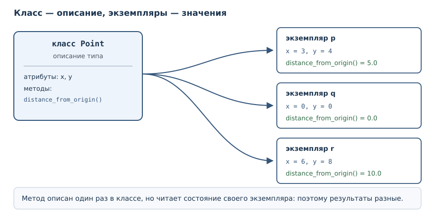
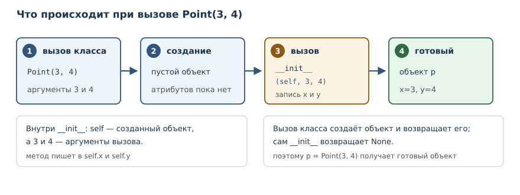

Объекты и классы
Класс как описание типа, экземпляр как значение: атрибуты, методы, параметр self и метод инициализации.
В этой главе
До сих пор вы работали со значениями, которые придумал кто-то другой: числа, строки, списки, словари. Их типы уже описаны в языке, и вам оставалось пользоваться готовым набором операций. Дальше начинается следующий уровень: вы описываете собственный тип, соединяете в нём данные и поведение и создаёте сколько угодно значений этого типа. Так программисты моделируют предметную область — счёт в банке, точку на плоскости, заказ в интернет-магазине.
25.1 Зачем это нужно
Представьте точку на плоскости. Её можно описать словарём:
{"x": 3, "y": 4}. Работает, пока точек немного и пока все помнят, какие
ключи обязательны. Но словарь не мешает опечататься: {"x": 3, "z": 4}
выглядит так же правдоподобно, а функция, считающая расстояние, обнаружит
проблему только в момент вызова. Поведение — расстояние, сдвиг, отражение —
приходится хранить отдельно от данных, и связь между ними держится на
договорённости.
Класс убирает эту договорённость из головы программиста и переносит в код. Он описывает, какие атрибуты есть у значения и какие операции с ним возможны. Второй вызов класса создаёт второе независимое значение с тем же набором возможностей. Это и есть главная идея объектного подхода: тип описывается один раз, а значений этого типа может быть сколько угодно.
25.2 Что вы сможете после этой главы
- объявлять класс и создавать его экземпляры;
- объяснять разницу между классом и экземпляром;
- объявлять атрибуты и методы и понимать роль параметра
self; - писать метод инициализации и объяснять, чем конструктор отличается от этого метода;
- читать тип и состояние созданного объекта и замечать, когда состояние нарушено.
25.3 Класс — это тип, экземпляр — значение
Класс — описание нового типа: какие атрибуты и методы имеют его экземпляры.
Экземпляр — объект, созданный по описанию класса и имеющий собственное состояние.
Объявление класса начинается со слова class, за которым идёт имя и
двоеточие; тело класса — обычный блок с отступом. Простейший класс может
быть пустым:
class Point:
pass
p = Point()
print(type(p))
print(type(Point))
print(p.__class__.__name__)
<class '__main__.Point'>
<class 'type'>
Point
Обратите внимание: имя Point обозначает сразу две вещи, но в разных ролях.
Слева от вызова Point() оно означает класс — описание. Результат вызова,
связанный с именем p, — экземпляр. Проверка type(p) сообщает, что тип
экземпляра — Point, а type(Point) показывает, что сам класс имеет тип
type. Класс и экземпляр не одно и то же: первый описывает, второй существует.
Слово pass в теле означает «здесь пока ничего нет». Вызов
класса создаёт экземпляр, даже если класс пуст: у него есть тип, но нет
своего состояния.

25.4 Атрибуты экземпляра
Атрибут — именованное значение, связанное с объектом и доступное через точку.
Пока класс пуст, состояние можно добавить снаружи: достаточно присвоить значение атрибуту экземпляра. Синтаксис тот же, что при обращении к методам строки: имя объекта, точка, имя атрибута.
class Point:
pass
p = Point()
p.x = 3
p.y = 4
print(p.x, p.y)
p.x = 10
print(p.x)
q = Point()
print(hasattr(q, "x"))
3 4
10
False
Первые два присваивания создают у p два атрибута. Второе присваивание
p.x = 10 не создаёт новый атрибут, а заменяет значение существующего.
Второй экземпляр q чист: hasattr(q, "x") возвращает False, потому что
атрибуты принадлежат экземпляру, а не классу и не другому экземпляру.
Гибкость здесь обманчива. Присваивание атрибута никогда не проверяет, что
вы написали правильное имя: p.collor = "red" создаст третий атрибут вместо
ошибки. Кроме того, пока атрибут не присвоен, его нет, и чтение даёт
AttributeError. Оба неудобства лечатся дисциплиной: атрибуты объявляют в
одном месте, а доступ к ним ограничивают методами. Об этом — следующая глава.
25.5 Методы и параметр self
Метод — функция, определённая в классе и получающая экземпляр первым аргументом.
self — первый параметр обычного метода, ссылающийся на экземпляр, у
которого метод вызван.
Объявление метода ничем не отличается от объявления функции, кроме места:
оно находится внутри тела класса. Первый параметр по соглашению называют
self, и через него метод обращается к состоянию своего экземпляра.
class Point:
def distance_from_origin(self):
return (self.x ** 2 + self.y ** 2) ** 0.5
p = Point()
p.x = 3
p.y = 4
print(p.distance_from_origin())
print(Point.distance_from_origin(p))
5.0
5.0
Оба вызова равносильны. Запись p.distance_from_origin() — сокращение:
Python сам подставляет p первым аргументом, поэтому self внутри метода
указывает на p. Запись Point.distance_from_origin(p) делает то же самое
явно: метод берётся у класса и вызывается с экземпляром. Второй вариант
показывает механизм, первый — то, как им пользуются.
Отсюда следует типичная ошибка новичка: вызвать метод у класса, забыв экземпляр.
class Point:
def distance_from_origin(self):
return 0
print(Point.distance_from_origin())
TypeError: Point.distance_from_origin() missing 1 required positional argument: 'self'
Сообщение точное: не хватает одного позиционного аргумента self. Метод —
обычная функция, и без экземпляра ему не с чем работать.
25.6 Метод инициализации и конструктор
Присваивать атрибуты снаружи неудобно: легко создать объект, у которого забыли половину состояния. Правильное место для начальных значений — метод инициализации.
Метод инициализации __init__ — метод, который Python вызывает
автоматически после создания экземпляра; в нём задают начальное состояние.
Конструктор — операция создания экземпляра (вызов класса), за которой
следует __init__.
class Point:
def __init__(self, x, y):
self.x = x
self.y = y
def distance_from_origin(self):
return (self.x ** 2 + self.y ** 2) ** 0.5
p = Point(3, 4)
print(p.x, p.y)
print(p.distance_from_origin())
print(isinstance(p, Point))
3 4
5.0
True
Что происходит при вызове Point(3, 4):
- создаётся новый экземпляр класса
Point; - Python вызывает
__init__и передаёт ему этот экземпляр первым аргументом, а следом — аргументы из вызова; - метод записывает значения в атрибуты экземпляра;
- готовый экземпляр возвращается как результат вызова.

Слово «конструктор» здесь стоит употреблять аккуратно. В Python конструктор —
это вызов класса, который создаёт объект; __init__ лишь заполняет уже
созданный экземпляр и ничего не возвращает. Если попытаться вернуть из него
значение, Python откажется:
class Point:
def __init__(self, x, y):
self.x = x
return 1
p = Point(3, 4)
print(p.x)
TypeError: __init__() should return None, not 'int'
Второй важный факт: __init__ — обычный метод по правилам вызова. У него
есть параметр self, и его можно вызвать вручную, хотя нужно это редко.
Двойное подчёркивание в имени означает, что метод участвует в модели данных
языка, а не просто лежит в классе. Подробно такие имена разберём в главе 28.
25.7 Состояние и поведение: счёт
Класс полезен, когда между атрибутами есть связь, которую нельзя нарушать. Счёт в банке: баланс не должен уходить в минус, а операции меняют его согласованно.
class Account:
def __init__(self, owner, balance=0):
if balance < 0:
raise ValueError("баланс не может быть отрицательным")
self.owner = owner
self.balance = balance
def deposit(self, amount):
if amount <= 0:
raise ValueError("сумма должна быть положительной")
self.balance += amount
return self.balance
def withdraw(self, amount):
if amount > self.balance:
raise ValueError("недостаточно средств")
self.balance -= amount
return self.balance
acc = Account("Аня", 100)
print(acc.deposit(50))
print(acc.withdraw(30))
print(acc.balance)
try:
acc.withdraw(1000)
except ValueError as error:
print("отказ:", error)
150
120
120
отказ: недостаточно средств
Здесь видно разделение обязанностей. Атрибуты owner и balance хранят
состояние. Методы deposit и withdraw — единственный предусмотренный способ
изменить баланс, и каждый проверяет условие перед изменением. Проверка в
__init__ не даёт создать счёт сразу с отрицательным балансом. Пока внешний
код пользуется методами, инвариант «баланс не отрицателен» сохраняется.
Нарушить его можно только прямым присваиванием acc.balance = -1 в обход
методов, и именно от этого защищает инкапсуляция — тема следующей главы.
25.8 У каждого экземпляра своё состояние
Методы хранятся в классе и общие для всех экземпляров, а атрибуты — у каждого свои. Поэтому два счётчика считают независимо:
class Counter:
def __init__(self):
self.value = 0
def click(self):
self.value += 1
return self.value
a = Counter()
b = Counter()
print(a.click(), a.click(), b.click())
print(a.value, b.value)
1 2 1
2 1
Три вызова идут слева направо: два раза щёлкает a, один раз b. В конце
у a значение 2, у b — 1. Каждый экземпляр хранит собственный набор
атрибутов; общим остаётся только описание класса.
25.9 Объекты и ссылки
Присваивание в Python не копирует объект, а связывает имя со значением. Для классов это особенно заметно, потому что экземпляр — изменяемое значение.
class Counter:
def __init__(self):
self.value = 0
a = Counter()
b = a
b.value = 5
print(a.value)
print(a is b)
5
True
Имена a и b указывают на один и тот же объект, поэтому изменение через
b видно через a. Проверка is подтверждает тождество. Если нужен
независимый объект, его создают вторым вызовом класса, а не вторым именем.
Ссылочная семантика и копирование подробно разобраны в главе 18; для классов
действует то же правило.
25.10 Объекты вокруг нас
Собственные классы — не отдельный мир, а продолжение того, что вы уже используете. Каждое значение в Python — экземпляр какого-нибудь класса, и методы, которыми вы пользовались с первых глав, объявлены именно в классах:
text = "Python"
print(type(text))
print(type(3))
print(type([1, 2]))
print(text.upper())
print(" ".join(["a", "b"]))
<class 'str'>
<class 'int'>
<class 'list'>
PYTHON
a b
type возвращает класс значения. Запись text.upper() — тот же механизм,
что p.distance_from_origin(): метод получает строку как первый аргумент.
Её можно переписать явно: str.upper(text). То же с " ".join([...]):
разделитель — строка, у которой вызван метод, а список — обычный аргумент.
Отсюда следует полезная привычка: читая незнакомый метод, спрашивайте, у
какого класса он вызван. sort — метод списка: он сортирует на месте и
возвращает None. sorted — встроенная функция: она возвращает новый список
и не меняет исходный. Путать их опасно. Собственный класс отличается от встроенного
только тем, что его описали вы.
25.11 Углубление: когда класс лишний
Класс — не универсальный ответ на любую задачу. Если сущность только хранит несколько связанных значений и не имеет собственного поведения, класс добавляет церемонию без пользы: словарь, кортеж или специальный класс данных (о них в главе 29) справятся короче.
Класс оправдан, когда выполняется хотя бы одно условие:
- есть инвариант — правило, которое нельзя нарушать (баланс не отрицателен, ширина положительна);
- несколько операций работают с одним и тем же состоянием, и логика их связана (положить и снять деньги, добавить и удалить книгу);
- объект нельзя позволить собрать «наполовину»: все обязательные значения задаются в методе инициализации.
Для точки с двумя координатами без операций достаточно кортежа. Для счёта с балансом и правилом «не уходить в минус» класс уместен, потому что правило живёт в методах и проверяется при каждом изменении. Выбор структуры данных — часть проектирования, и следующий раздел объясняет, как защитить инвариант от обхода снаружи.
25.12 Типичные ошибки
- Забыть
selfв объявлении метода. Обычно это проявляется какTypeError— неверное число аргументов или несовместимый тип. Но если первый параметр случайно совместим по типу, ошибка может выглядеть как неверное значение, а не как падение. - Забыть присвоить атрибут в
__init__. Чтение даётAttributeError, а не значение по умолчанию. - Опечататься в имени атрибута.
p.collor = "red"создаст новый атрибут: присваивание не проверяет имена. - Ждать от
print(p)содержательного вывода. По умолчанию печатается имя класса и адрес объекта; читаемое представление задаётся отдельно, в главе 28. - Считать, что
b = aкопирует объект. Оба имени указывают на один экземпляр. - Возвращать значение из
__init__. Метод обязан вернутьNone. - Путать класс и экземпляр.
Pointописывает,Point()создаёт; методы первого уровня вызываются у экземпляра.
25.13 Упражнения
1. Прогноз вывода
Не запуская код, определите, что напечатает программа:
class Box:
def __init__(self, width, height):
self.width = width
self.height = height
def area(self):
return self.width * self.height
b = Box(2, 5)
print(b.area())
b.width = 10
print(b.area())
print(type(b).__name__)
Запишите три строки и объясните, почему вторая отличается от первой.
2. Класс Rectangle
Объявите класс Rectangle с методом инициализации, принимающим ширину и
высоту. Добавьте методы area() и perimeter(). Создайте прямоугольник
3×4 и напечатайте площадь и периметр.
3. Исправление ошибки
Класс задуман так, чтобы метод возвращал приветствие, но вызов падает:
class Greeter:
def greet(name):
return "Привет, " + name
g = Greeter()
print(g.greet())
Объясните, чего не хватает, и исправьте класс двумя способами: добавив
параметр self и вызвав метод через класс с явной передачей экземпляра.
4. Счётчик с командами
Объявите класс Counter с методами click(), reset() и value(),
который возвращает текущее значение. Проверьте последовательность: два
щелчка, сброс, один щелчок. Обратите внимание, что имя метода не должно
совпадать с именем атрибута — объясните, почему.
5. Анализ ссылок
Создайте один экземпляр класса Counter, свяжите с ним два имени, измените
значение через второе имя и проверьте первое. Затем создайте второй
экземпляр и повторите проверку. Объясните разницу результатами и кодом.
6. Класс Temperature
Объявите класс Temperature с атрибутом в градусах Цельсия и методами
to_fahrenheit() и is_freezing(). Проверьте на значениях 0, 100 и −10.
Методы не должны изменять состояние объекта.
7. Валидация в инициализации
Добавьте в класс Rectangle проверку: ширина и высота обязаны быть
положительными, иначе поднимается ValueError с понятным сообщением.
Проверьте оба случая: корректный и некорректный.
8. Стек
Объявите класс Stack с методами push(value), pop() и size().
Внутреннее хранилище — список, созданный в __init__. Проверьте:
положили два значения, сняли одно, посмотрели размер. Что произойдёт при
попытке снять значение из пустого стека?
9. Мини-проект: библиотека
Объявите два класса: Book (название, автор, год) и Library (список книг,
методы add(book) и titles()). Добавьте две книги и напечатайте их
названия. Подумайте, почему список книг должен принадлежать экземпляру
Library, а не классу.
10. Словарь или класс
Одну и ту же сущность — книгу с названием, автором и годом — опишите двумя
способами: словарём и классом с методом describe(). Напишите короткий
вывод о том, какой способ лучше защищает от опечаток и почему. Подтвердите
вывод примером кода.
25.14 Проверка понимания
- Чем класс отличается от экземпляра? Что означает
type(p)и что —type(Point)? - Почему метод получает
selfпервым аргументом, хотя при вызовеp.method()вы его не передаёте? - Что произойдёт, если убрать
selfиз объявления метода? А если забыть присвоить атрибут в__init__? - Чем конструктор отличается от метода инициализации? Что возвращает
__init__? - Почему
b = aне создаёт второй объект? Как получить независимый экземпляр? - Зачем хранить данные и поведение в одном классе, если можно держать словарь и отдельные функции?
25.15 Что дальше
Вы научились описывать типы и создавать значения, но состояние пока открыто: любой код может записать в атрибут что угодно. В следующей главе «Атрибуты, свойства и инкапсуляция» вы увидите, как закрыть состояние за методами и свойствами, чтобы инварианты класса нельзя было нарушить случайно.